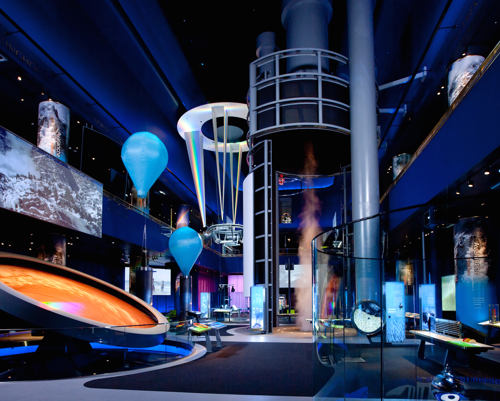
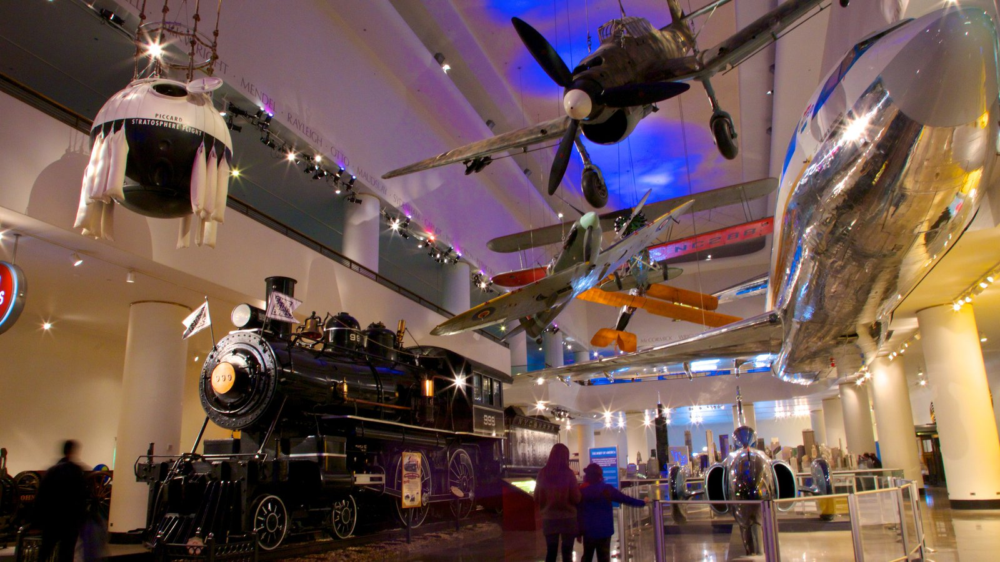
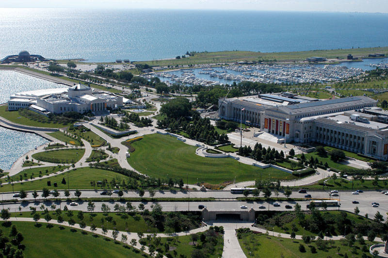
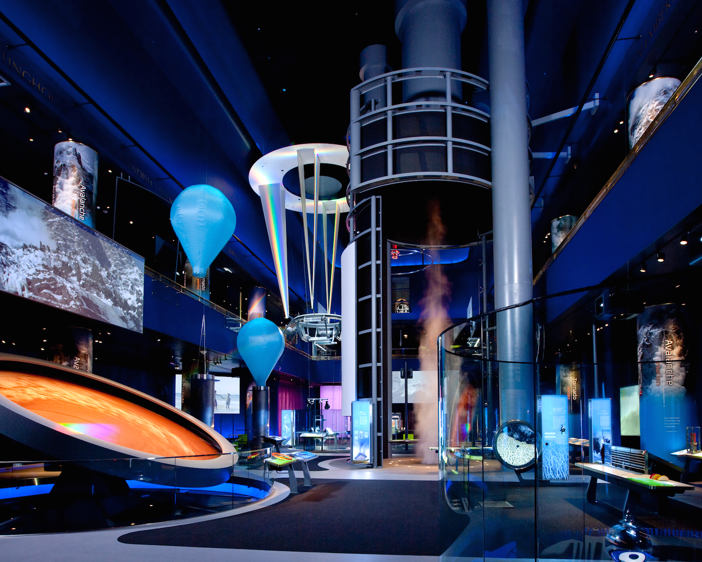
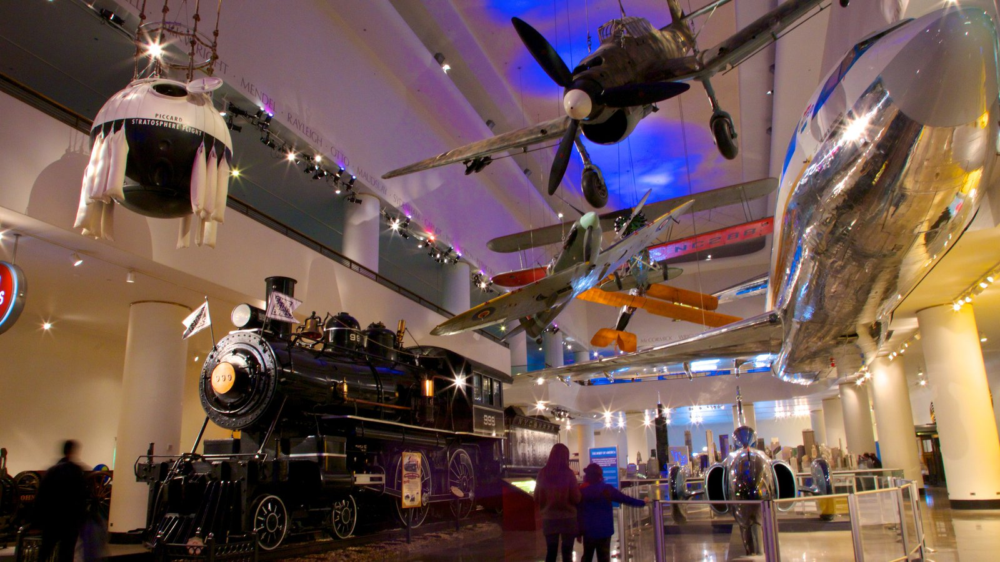
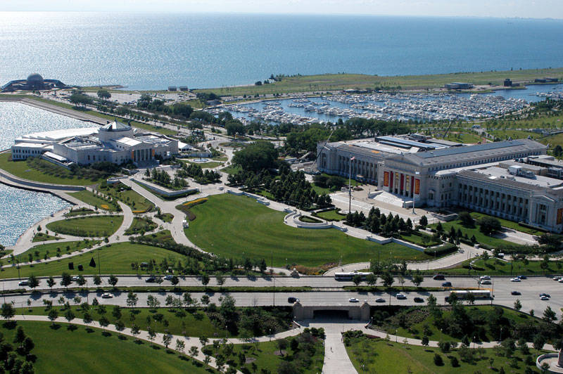

MUSEO DELLA SCIENZA E DELL'INDUSTRIA
Il Museo della Scienza e dell’Industria di Chicago (MSI) si trova nel distretto di Hyde Park vicino al Lago Michigan,
ed è una delle attrattive storico-culturali più importanti di tutto lo stato dell’Illinois. Fu costruito per l’esposizione
universale di architettura nel 1893.
Tra le varie esposizioni del Museo della Scienza e dell’Industria di Chicago ci sono una miniera di carbone ancora in attività,
un sottomarino tedesco U-505 della seconda guerra mondiale e un modellino ferroviario di 330 metri quadrati.
A grandezza naturale, il Museo della Scienza e dell’Industria di Chicago ospita invece il primo treno passeggeri con motore
diesel in acciaio inox Pioneer Zephyr e l’Apollo 8 che ha portato i primi uomini intorno alla Luna.
Secondo le affluenze fatte registrare nel 2009, il Museo della Scienza e dell’Industria di Chicago è stata la terza
attrazione culturale della città statunitense più visitata. Un record che intende migliorare nel prossimo futuro.